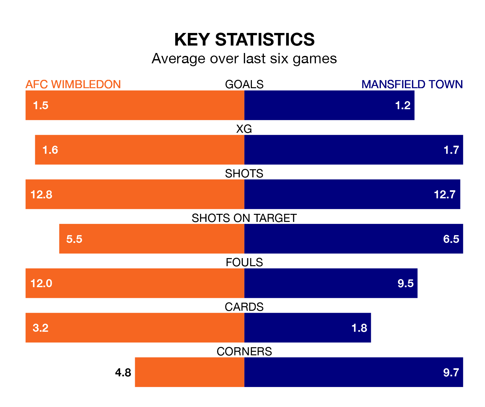

AFC Wimbledon host Mansfield Town on Saturday at the Cherry Red Records Stadium in EFL League Two.
In their last league match, on Tuesday, Wimbledon lost to Milton Keynes Dons 3-1 away, with their goal scored by Armani Little.
Mansfield drew, 1-1 at home against Sutton United, with George Maris scoring their goals.
In Christy Pym, Mansfield can rely on one of the league's safest pair of hands. He has kept 10 clean sheets in his 27 appearances this season, and no 'keeper has prevented the opposition scoring more often in EFL League Two.
In Wimbledon's net, Alex Bass has nine clean sheets in 27 games. He has conceded a goal every 78 minutes, 50% more often than the 116 minutes between goals for Pym.
Town are third in the table after 27 games, of which they have won 13 and drawn 12, earning 51 points.
The Dons are seven places behind the Stags in 10th, with 10 wins and nine draws putting them on 39 points.
With 46 goals in 27 games so far this season, the away side are scoring more than average in the league with 1.7 goals per game. And they are conceding fewer than average, letting in 22 goals at a rate of 0.8 per game.
The hosts are also above average scorers, with 1.6 goals per game, compared to a league average of 1.5. They have conceded 1.2 goals per game.
Wimbledon are in mixed form in EFL League Two, with two wins and a draw from their last six games.
With two wins and three draws over that period, Mansfield's form is slightly better – they have taken nine points from 18, compared to Wimbledon's seven.
In the last three years, Wimbledon and Mansfield have played each other on three occasions. Mansfield won two of them and they drew once.
Their last meeting was on October 7, when they played out a 0-0 draw.
Saturday's match will be refereed by Jacob Miles, who has taken charge of seven EFL League Two games so far this season, issuing no red cards and booking 28 players. He has not awarded any penalties.
The last Wimbledon game Miles refereed was a 2-2 away draw with Newport County on September 2. His last Mansfield match was their 1-1 draw away at Gillingham on September 30.
Updated: 08:51 (UTC), 25/01/24